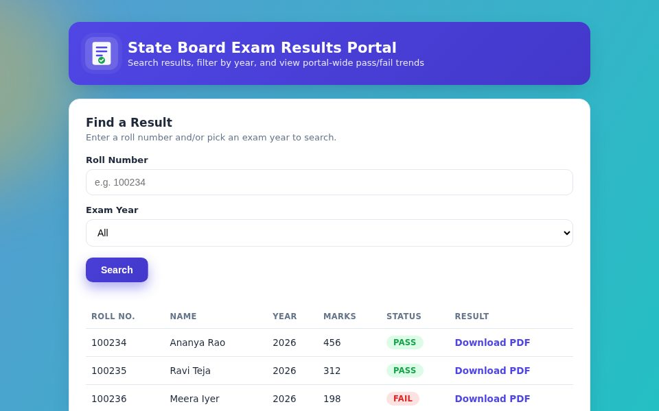
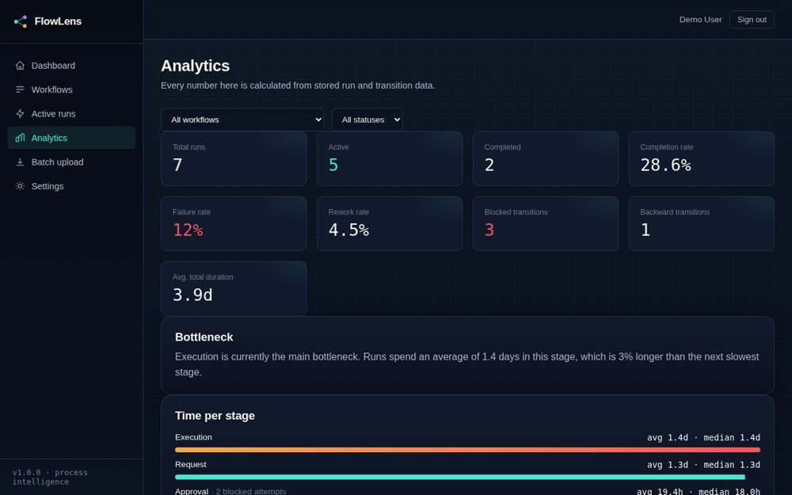
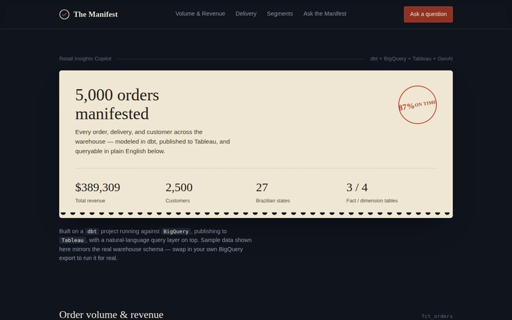
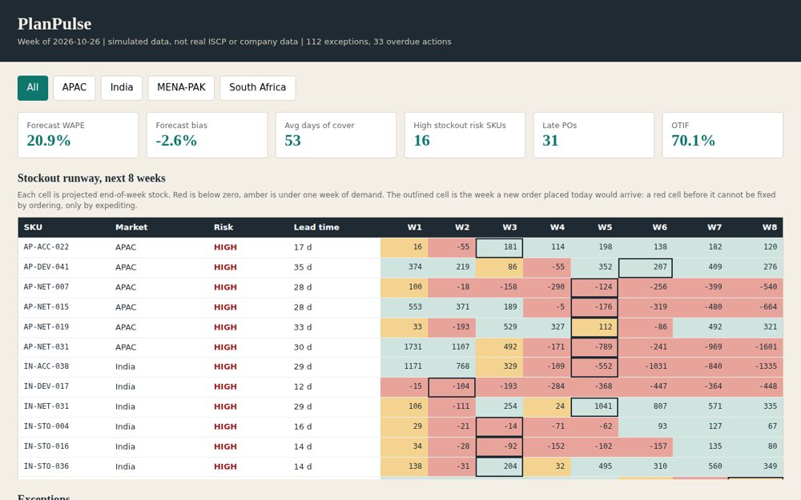
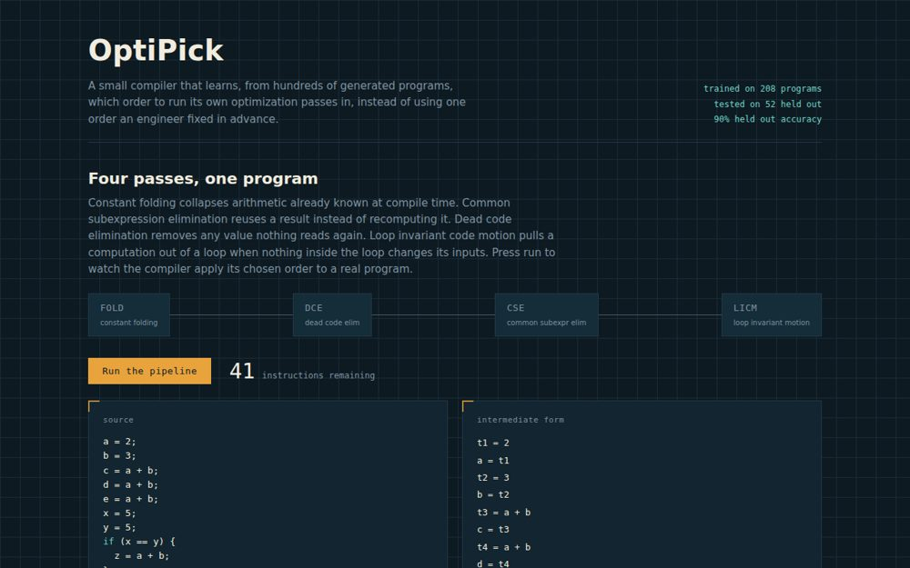

Building thingsthat work,and showing proof.
I'm a computer science graduate from NIT Durgapur. I like projects where something real happens: a sensor streams data, a model learns from it, a dashboard shows what changed. Each one comes with tests and a plain note on what I did and didn't run. I'm based in Visakhapatnam and happy to relocate anywhere in India.
I graduated from NIT Durgapur in May 2026 with a B.Tech in Computer Science. Most of what I know I learned by building things and watching them break: wiring an ESP32 to a motion sensor at 2am, tracking down a geofence that was off by 40 meters, and arguing with a classifier about what counts as "urgent."
My final-year project is the one I'm proudest of. Two teammates and I built a wearable activity recognizer on our own hardware, and every number in it came from data we collected ourselves. Since then I've kept building across test automation, backend services, data pipelines and applied ML. I even wrote a small COBOL batch system, because I wanted to see how that world works first-hand.
Every README I write says what I tested and what I didn't. I'd rather you hear it from me than find it later.
Things I've built
Six to start with, then a shorter list. Every project has its own README that says what I tested and what I didn't. The rest is on GitHub.
My final-year project, built with Ravada Laxman Giridhar and Abhishek Gupta under Dr. Sujoy Saha. We made the hardware ourselves: an ESP32-S3 and a motion sensor streaming at 50 Hz over Bluetooth. Then we collected our own dataset and hand-built about 80 features for a decision tree that tells six activities apart.
An end-to-end crop advisor. PyCaret compares candidate models to find a baseline, a tuned XGBoost regressor goes to production, and every run is tracked in MLflow. A FastAPI backend on PostgreSQL serves it all, live on Render.

A test suite for a mock exam-results portal I built myself, so anyone can rerun it without CAPTCHAs or terms-of-service worries. Selenium and TestNG cover the UI, chart checks wait for async re-renders and compare against the underlying data, RestAssured hits a live API, and JDBC checks data integrity on MySQL or Oracle. One accessibility test fails on purpose, to prove the suite catches real defects.
A Spring Boot service pings five public APIs every ten seconds and streams the results through Kafka. A Python detector flags downtime and slow responses with CRITICAL, HIGH or MEDIUM severity, and a FastAPI backend on PostgreSQL feeds a React dashboard that refreshes every five seconds. The whole stack starts with one docker-compose command.

Most trackers tell you whether a task is done. FlowLens shows how work actually moves: define stages and validation rules, run records through them, and see every blocked transition, every rework loop and the real bottleneck, calculated from stored history. One command (docker compose up) starts it with demo data.

A small analytics platform on synthetic e-commerce data: a dbt warehouse (4 dimension and 3 fact tables), three Tableau-ready dashboard extracts, and a natural-language-to-SQL engine that answers business questions with real queries. The dashboard page replays sample answers; the real engine is the Python service in the repo.
A weekly supply-chain planning review for four markets, built on simulated data. It loads forecast, stock and purchase-order extracts, runs 10 SQL data-quality checks, flags what's off, tracks who has to act and by when, and writes the Excel workbook, Word note, PowerPoint deck and dashboard. 13 tests pass, and a short doc lists the automation ideas I'd try next. The scheduled GitHub run and the live AI summary haven't been exercised yet.

A watchdog that restarts, scales or rolls back an unhealthy service, but only through an RBAC check the poller can't bypass. Kubernetes and Terraform files are included but haven't been run on live infrastructure yet.
Request and approval tracking for internal ops, with an enforced approval lifecycle and role-based access on both a REST API and a GraphQL endpoint. Checked with a 40-check verification harness; the CI pipeline is written but not run yet.
A nightly insurance-claims batch cycle, built because I wanted to learn mainframe work first-hand instead of listing it on a resume. The COBOL ran for real on GnuCOBOL, and a portability bug I hit on a second machine is written up in the README. The JCL is written to standard but hasn't run on z/OS.
Synthetic claims data cleaned into a star-schema warehouse: 6,120 raw rows in, 120 dirty rows quarantined, 10 data-quality checks passing, and SQL for denial rates, AR aging and payer speed-to-pay.
An MCP server that gives any AI client two teaching tools, adaptive quizzes and rubric-based grading, with a dashboard where a teacher reviews and overrides every AI grade. It ships with an eval harness and a written list of where the grader falls short.
Matches people across two cameras to build one footfall map. On its synthetic two-camera benchmark it scores 0.989 F1, and the README shows the weaker first version (0.776) and what fixed it.
Vizag gets cyclones and monsoon flooding most years, and maps are slow to catch up. RouteRift compares OpenStreetMap against a routing engine and flags where they disagree: undocumented closures, one-way mismatches, ETA drift.
A tiny compiler that learns which order to run its own optimization passes in. On held-out synthetic programs it picks the cheaper order about 90% of the time, saving around 2.4% of work on average. Includes a browser visualizer and 17 tests.

Scans warehouse video feeds with object detection and tracking to follow items and flag stock discrepancies, with a Flask API, MongoDB and a React frontend.
Attendance analytics where the 7-day moving average is computed from exact daily rates and rounded once at the end, and an explain endpoint shows every query using an index scan.
A governed agent that reviews a pull request: it retrieves code, runs the real tests, proposes a fix, checks it against a safety guardrail, and waits for human approval before touching the repo. 14 unit tests pass; the approval pause and resume was verified with a stub model instead of a live LLM.
A test-orchestration platform with an AI ticket classifier, a natural-language query layer and JWT auth. 23 backend and 19 frontend tests, with CI green on GitHub Actions.
A mission-control style desktop console for multi-channel telemetry: one C++ thread per simulated channel, custom Qt painting, a built-in-test status per channel, and a real POSIX message-queue exchange between two processes.
Beyond the code
I write things down
Every project has a README that says what I tested and what I didn't. My KYC/AML pipeline writes its own Word report for flagged cases, and my securitization toolkit exports Excel schedules and a Word work paper built from its own results.
I work with people
As Editor-in-Chief of Radio NITRoz I led a team of 20+ and co-led sponsorship outreach to 140+ local businesses. My final-year project was a three-person build with a faculty advisor, so I'm comfortable sharing a plan and asking for feedback.
I look for where work gets stuck
FlowLens exists because I wanted to see where a process really slows down. It tracks blocked steps and rework loops and works out the bottleneck from stored history. In my helpdesk project I built SLA rules that flag breaches as they happen.
I use automation with a human in charge
I've built agents that stop and wait for approval: a pull-request reviewer that asks before touching the repo, a watchdog whose suggested fixes an operator accepts or rejects, and a natural-language-to-SQL layer over a tested dbt warehouse.
It passed on my machine. Then it didn't.
I built a small COBOL batch system for insurance claims and tested it end to end on GnuCOBOL 3.1. Every business rule matched real program output, and a SQL query over the results matched the program's own totals.
Then I ran it on a second machine with GnuCOBOL 3.2, and the reject file and the database load file started failing with status 71. The newer version is stricter about leftover bytes in a line-sequential record, and my code had quietly relied on the buffer already being blank.
The fix was to clear each output record before building it, instead of trusting what happened to be in memory. What I took from it: a passing test on one machine only tells you about that machine.
Read the full write-up, including a deliberate duplicate-record test ↗
Skills & stack
How I got here
NIT Durgapur, with coursework across systems, ML and embedded computing.
Competed at the NASA Ames Space Settlement Design Competition.
Led a team of 20+ and co-led sponsorship outreach to 140+ local businesses for NIT Fest.
Remote internship and my first hands-on engineering work.
My final-year project, from custom hardware to a trained classifier.
B.Tech CSE from NIT Durgapur.
Test automation, backend, data and ML projects across 30+ repositories, and open to roles across India.
Let's talk.
Open to QA/test automation, SDE, data engineering/analytics, and AI/ML roles across India. Happy to relocate, with Bangalore, Pune, and Hyderabad top of mind.